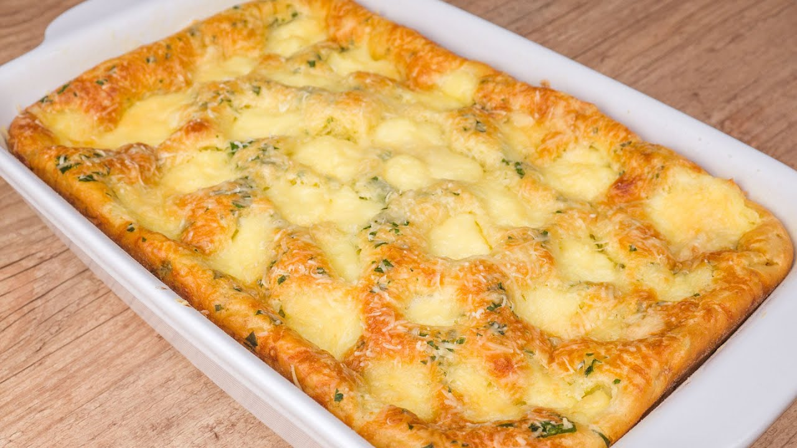
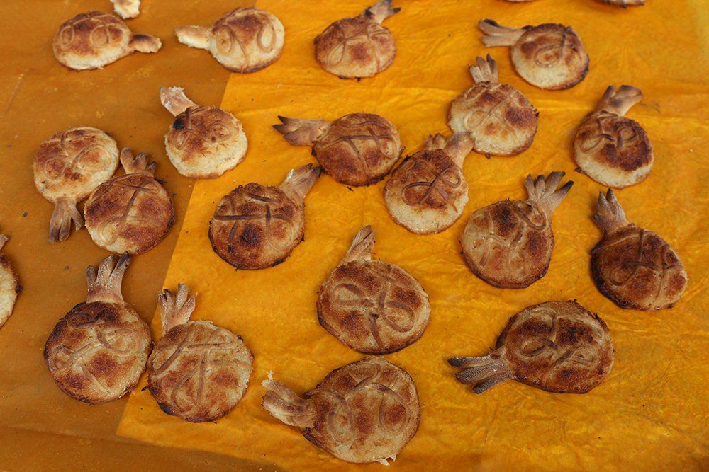

Na culinária do litoral maranhense, os ingredientes vindos do mar são amplamente utilizados, e o sururu não é uma exceção. Um dos pratos mais marcantes que destacam o preparo de frutos do mar no estado é o sururu ao leite de coco.

Torta de camarâo
Massa leve e aerada, feita à base de ovos batidos na batedeira, com recheio de camarão que pode ser fresco ou seco, que é incrementado com batatas cozidas. Assim é a torta de camarão, prato típico maranhense.

Doce de espécie
Típico das festas do Divino Espírito Santo, na cidade de Alcântara e uma herança dos açores portugueses, o doce de espécie faz parte da culinária maranhense.